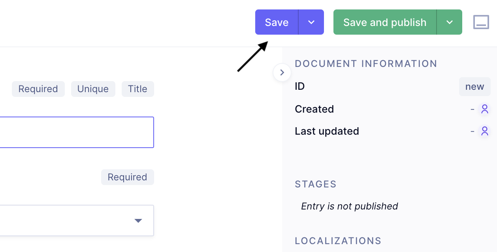

よくある質問
Q. GraphCMSのログイン画面が見当たりません
A. ブラウザの表示サイズの問題かもしれません． パソコンのブラウザでサイトを開き，できるだけ大きい画面で表示してください．
また，Sign up for freeからでもログインは可能です．
Q. 新しくメンバーを作成したいのですが
A. ContentsにあるMemberタブを選択し，右上にある +Create itemから新規作成が可能です
Q. 作成したコンテンツを下書きのまま置いておきたいのですが
A. 右上のSave and publishではなくSaveを選択すれば，公開せずに一時保存が可能です． 
Q. 一時保存したデータを公開したいのですが
A. コンテンツ一覧からチェックボックスを利用して公開することが可能です．
Q. HP中の歴代車両にある"大会成績を見る"がうまく動かないのですが
A. Machineで設定したCarNameと，Historyで設定したCarNameが一致していないと，URLの生成が正常に行えません． スペースなどが入っていないか確認してみてください．
Q. 間違えてコンテンツを削除してしまいました．元に戻せますか？
A. 削除したものは再度復元することはできません．
Q. 変更がHPに適応されません
A. Publishを行う度，Netlifyによるサイトのビルドが行われます． ビルドには少し時間が掛かるため，変更後すぐにサイトに変更が行われるわけではありません．
もし，時間が経っても変更が確認できない場合はNetfilyの管理ページから，ビルドが成功しているか確認してください．